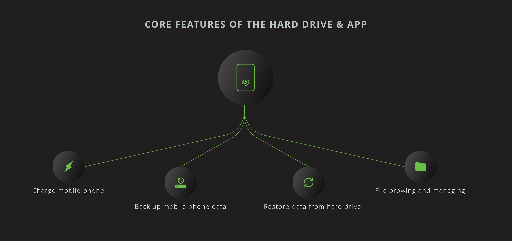
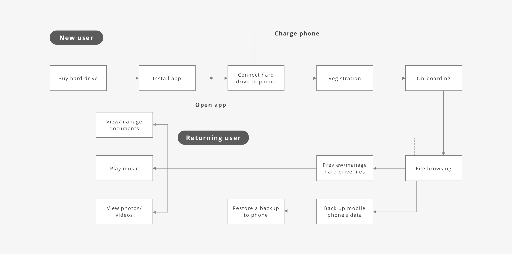
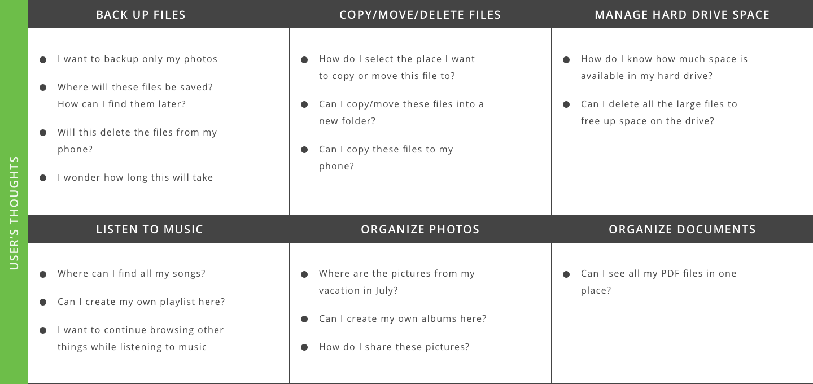
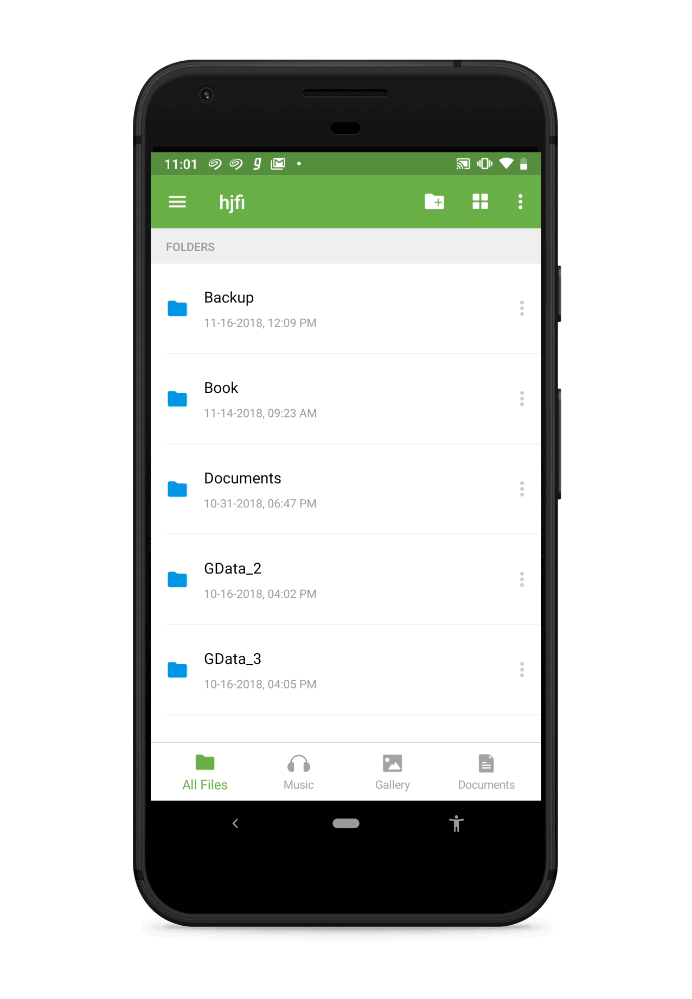
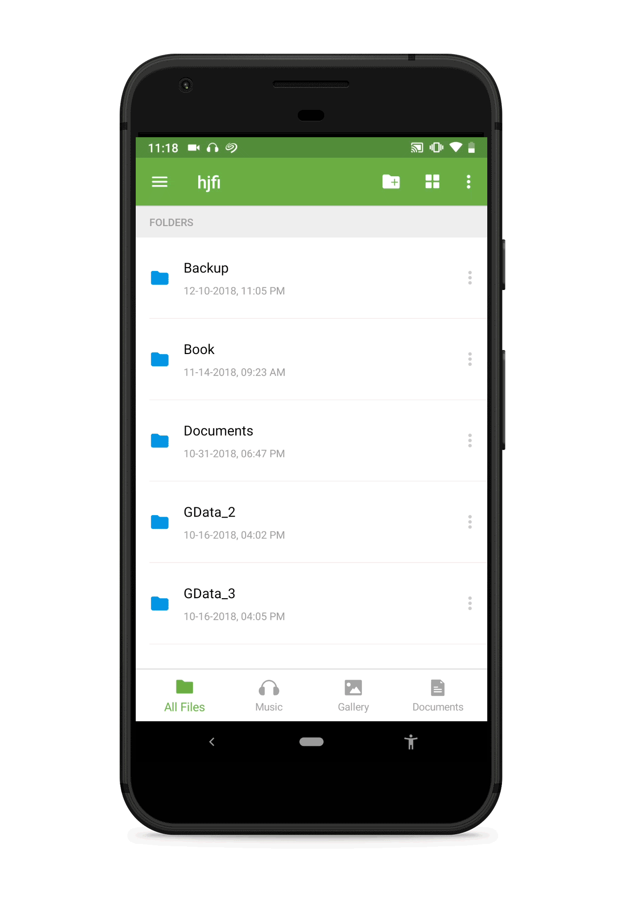
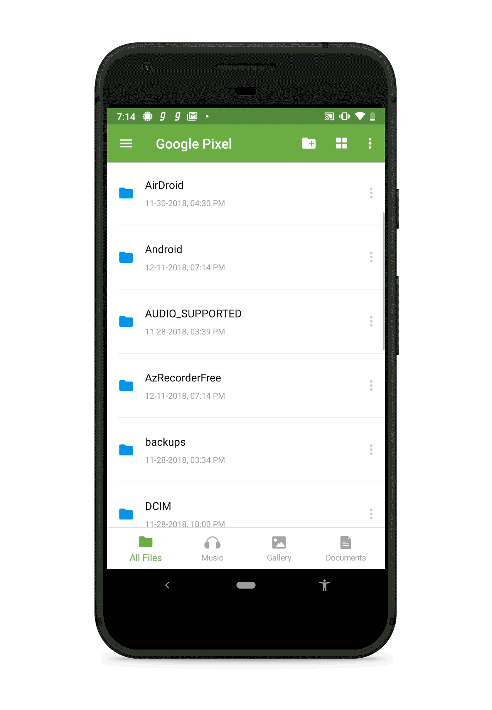
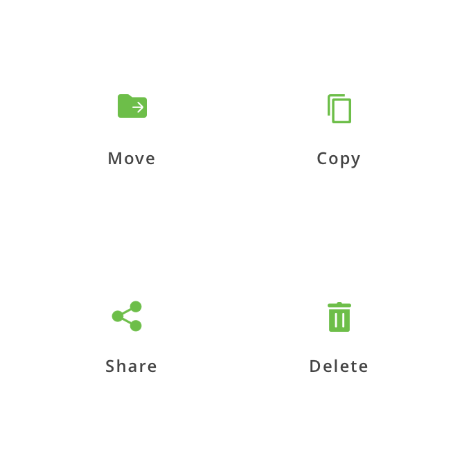
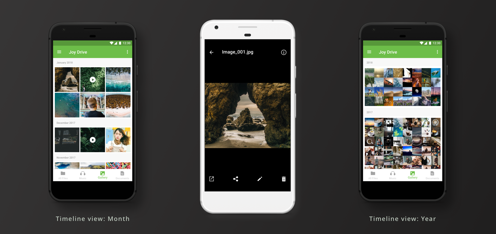
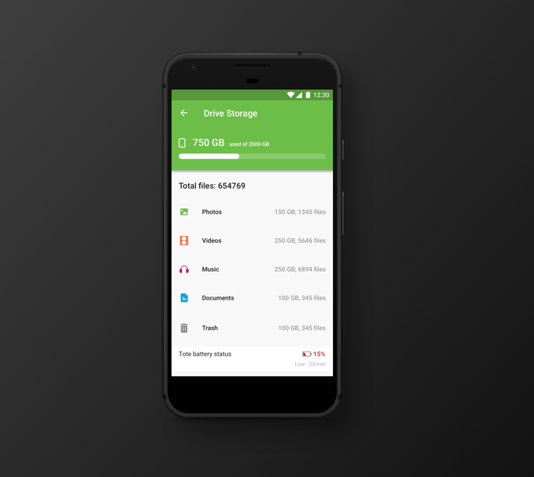

BACKGROUND
While working at Mutual Mobile, I had the opportunity to lead the design efforts for iOS and Android apps we built for Seagate Technology. The core features of these apps are to allow users to manage files and folders on their hard drives using only their mobile phones (no computer needed). I worked closely with the product team at Seagate and engineers at Mutual Mobile for design and development of the apps.

- Use the hard drive as a power bank for charging mobile phones.
- Back up content from mobile phone to hard drive.
- Restore content from hard drive to mobile phone.
- Allow users to manage files and folders on their hard drives using only their mobile phones (no computer needed).
GOAL
To design iOS and Android versions of the file manager app for the OTG supported Seagate hard drive
THE USER JOURNEY
GENERAL TASKS
IDEATION
INFORMATION ARCHITECTURE
- Since a huge data set is being managed on a small device, segregating files based on type makes it easier to manage files.
- Content aggregation is available at all times in the bottom bar. This makes it easy to switch between file types.
- Battery and storage status is available in the side drawer. Tapping on it gives detailed storage information
- Rest of the options and other storage locations (phone memory, SD card etc) are available in the side drawer.
FOLDER BROWSING

List view and grid view

Sorting options
FILE ACTIONS

List view and grid view

Sorting options
MUSIC
- All songs are categorised by Albums, Artists and Genre
- The music player gets minimised so that users can continue to perform other actions while still having access to the player
GALLERY

- Photos are arranged in a timeline view.
- Users can switch the timeline format between Day, Month and Year.
SPACE MANAGEMENT

Users can view detailed breakdown of space used on hard drive by each file category along with the file count.